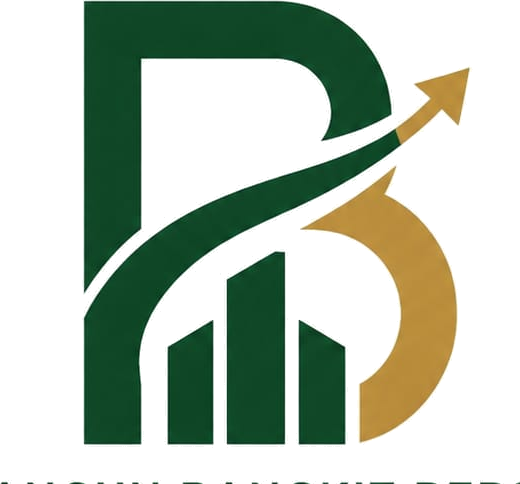

PRECISION
MANUFACTURING
Supplier • contractor mechanical • electrical & steel structure

PT. BANGUN BANGKIT BERSAMALuwungragi - Bulakamba - Brebes◔ 0878-8818-1316BUILD QUALITY • BUILD TRUST • GROW TOGETHER
Mitra profesional untuk kebutuhan industri, manufaktur, fabrikasi, maintenance dan repair.
TENTANG PERUSAHAAN →Mengutamakan kualitas proses dan hasil akhir.
Didukung tenaga kerja berpengalaman dan kompeten.
Keselamatan menjadi bagian utama setiap proses.
Berkomitmen terhadap target pengerjaan.
Membangun kemitraan jangka panjang bersama pelanggan.
PT bangun bangkit bersama adalah perusahaan full service yang kompeten di bidangnya dalam menangani berbagai project pengadaan kebutuhan untuk industri dari skala kecil sampai besar, kami memiliki konsep koordinasi serta integritas multi disiplin adalah motto kami, dengan melibatkan para tenaga ahli profesional.
Komitmen kami untuk terus meningkatkan kemampuan serta kualitas kerja adalah dedikasi kami untuk bisa menjadi mitra terdepan, terpercaya untuk anda.
SELENGKAPNYA →
Menjadi perusahaan terbaik, terpercaya dalam pelayanan serta produk.
Supplier • contractor mechanical • electrical & steel structure
Laser Cutting • Plasma Cutting • Bending • Cutting & Forming • Fabrication & Assembly
Repair • Rework • Modification • Restoration • Perawatan komponen mesin
Kualitas merupakan faktor utama dalam keberhasilan proyek manufaktur dan fabrikasi. Setiap pekerjaan dilakukan dengan memperhatikan kesesuaian material, dimensi, kualitas machining, kualitas sambungan pengelasan, pemeriksaan visual, pengukuran, dan pemeriksaan akhir.
Keselamatan kerja merupakan bagian penting dari setiap proses operasional. Kami berkomitmen menciptakan lingkungan kerja yang aman melalui prosedur kerja yang sesuai dan penggunaan APD yang tepat.
Dokumentasi pekerjaan PT. Bangun Bangkit Bersama yang dikelola melalui Google Spreadsheet. Tambahkan proyek cukup dari Spreadsheet tanpa mengubah kode website.
“MEMBANGUN KUALITAS, MENGUATKAN KEPERCAYAAN, TUMBUH BERSAMA.”
Silakan hubungi kami untuk kebutuhan pengadaan industri, fabrikasi, maintenance, repair, mechanical, electrical dan steel structure.
Jl. Raya Luwungragi No. 35, RT.004/RW.007
Kec. Bulakamba, Kab. Brebes
Jawa Tengah 52253
bangunbangkitbersamaa@gmail.com